Raydiance Inc., headquartered in Petaluma, California, was the manufacturer of the world's first software-controlled ultrashort pulse laser (USP).
The company was founded in 2003 by Jeff Bullington and Peter Delfyett in Orlando, Florida under the name Ablation Industries, Inc. In 2004, Ablation Industries changed its name to Raydiance, Inc. and recruited Barry Schuler, former CEO. America Online (AOL). new CEO and Chairman of the Board. Raydiance, Inc. has commercialized a fiber-based USP technology developed in the laboratories of the College of Optics at the University of Florida.
This effort was funded by the Defense Advanced Research Projects Agency (DARPA).
In 2007, Raydiance launched its first product, a pulsed desktop femtosecond laser. The company ceased operations in July 2015. The assets of Raydiance Inc were acquired by Coherent Inc in August 2015.
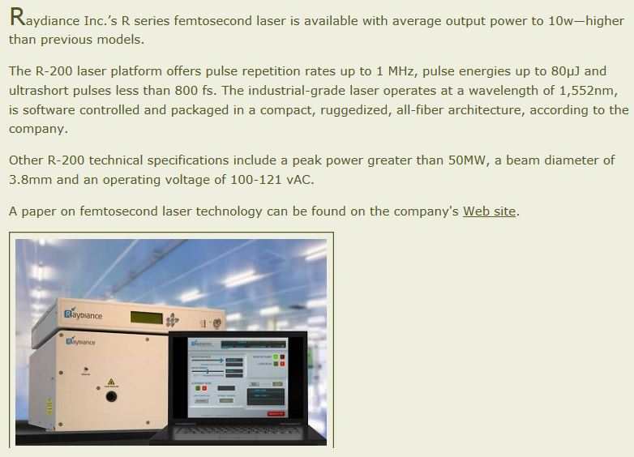
Here is the "Saint Grall" of a laser collection !!This laser is one of the most complex structures made to date in femtosecond lasers called "TOP table" that can be moved. It has several innovations (the company has more than 40 patents on this technology). The first novelty is that it uses an oscillator and amplifier all fiber!
Laser design and performance
The architecture of the laser system is based on well-known modulated pulse amplification (CPA) to minimize self-phase modulation (SPM) during amplification of high peak power pulses (100 MW). The pulses of a Mode Locked Laser (MLL) are broadened spectrally via controlled SPM in a low gain amplifier, stretched at 1 ns (FWHM) by a pair of Fiber Bragg gratings (CFBGs), amplified through a new sequence by a erbium fiber amplifiers, and compressed to 500 fs in a Treacy style pulse compressor. The pulse rate is reduced from 40 MHz to 100 kHz between the preamplifiers using an acousto-optical extinction modulator (AOM) 35 dB. To further increase the pulse energy margin, an active pulse trainer is used between the preamplifiers to compensate for the nonlinear phase accumulated in the amplification chain. The sequence of light generating and amplifying components are all fiber optic and fused together to form a very robust and stable optical path. Control of the final output through a second AOM and pulse compression are performed in an opto-mechanical package.
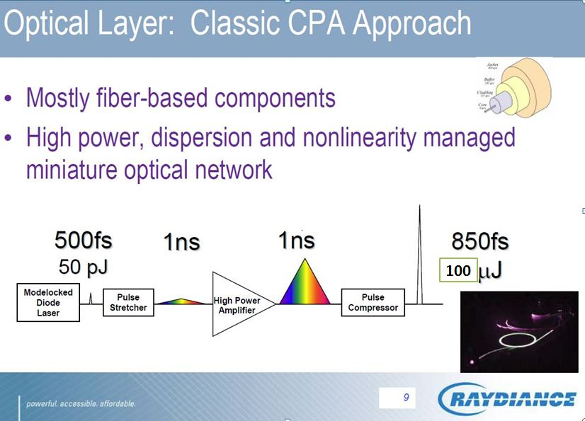
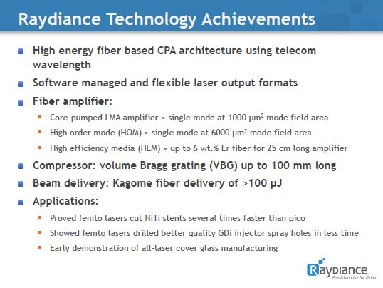
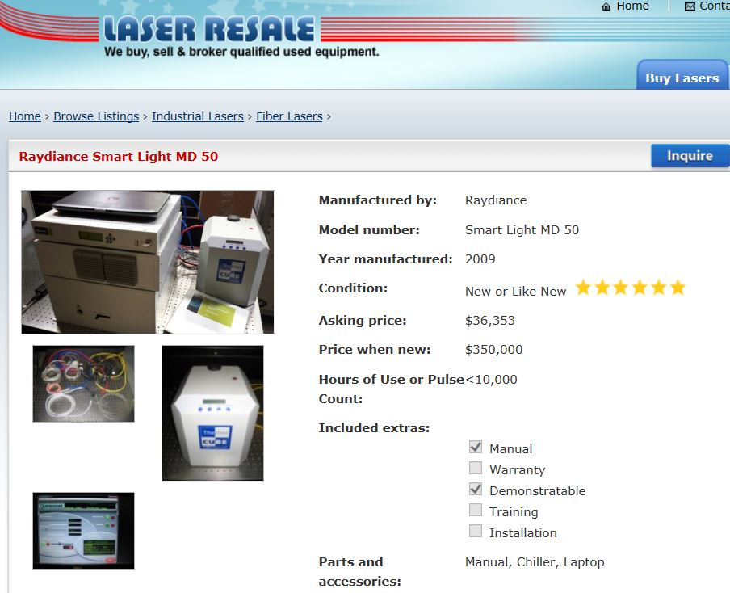
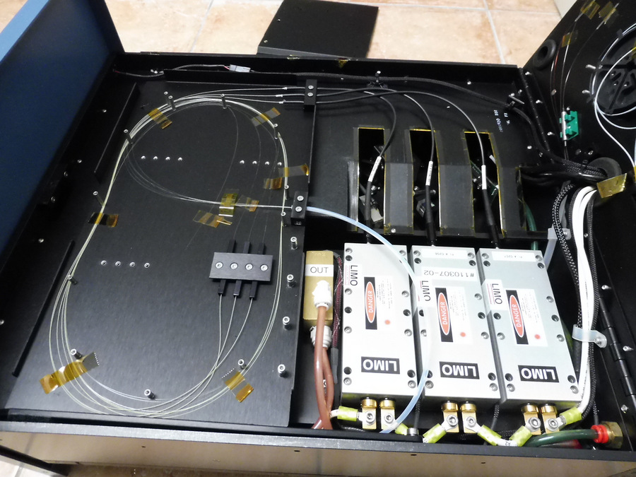
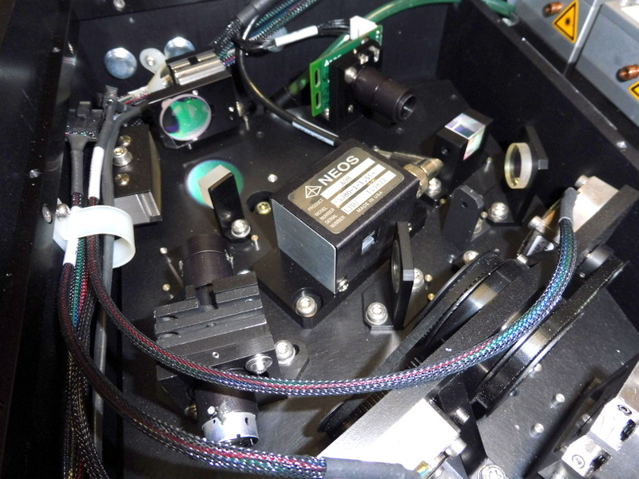
Fiber amplifier stage pumped by 3 LIMO laser diodes of 60W cw at 1470 and 1532nm.
For optically pumping an Er: YAG crystal with a laser diode, an InP diode (indium phosphide) at 1470 nm or at 1532 nm can be used.
Since the erbium ion has significant absorption and emission cross sections at 1532 nm, it is possible to pump an Er: YAG crystal using an erbium doped fiber laser.
Part of the laser where the pulse amplifier is extracted in the fiber amplifier for injection into the pulse compressor which consists of a Treacy compressor using diffractive Bragg mirrors.
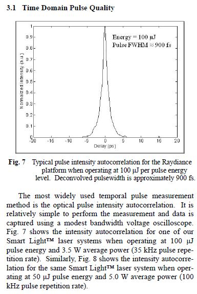
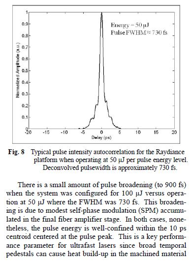
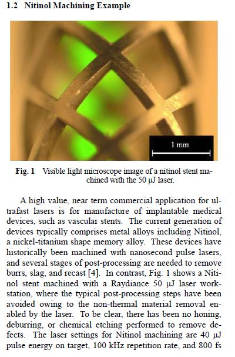
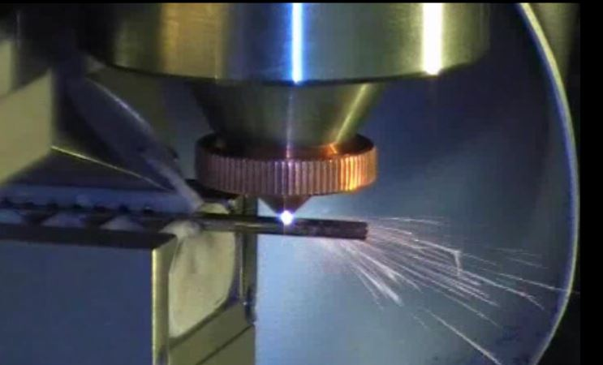
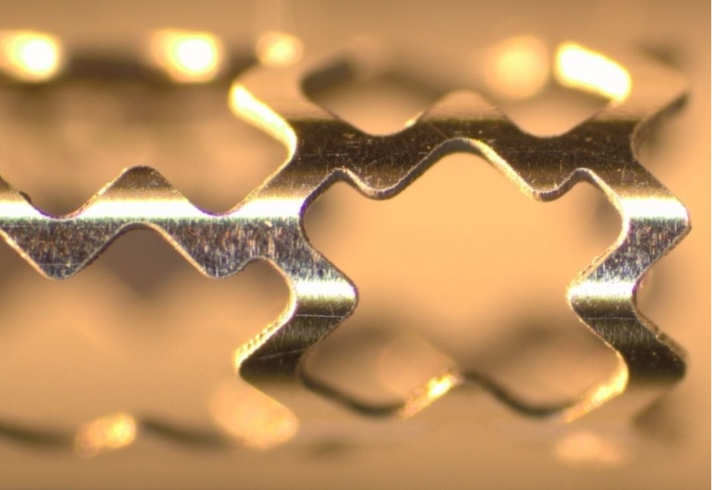
This laser allows machining any type of materials (steel, diamond, ceramic, plastics etc ...) without any heating due to the ultra-short duration of the laser pulse (less than 800fs)